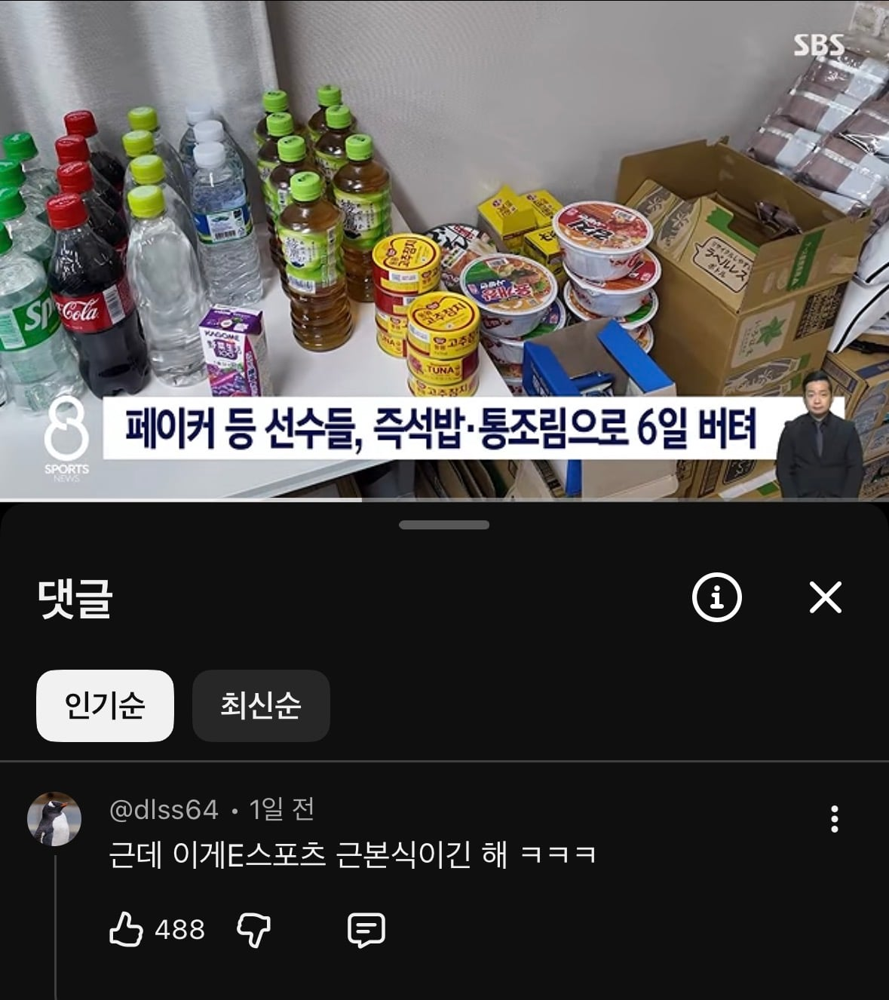
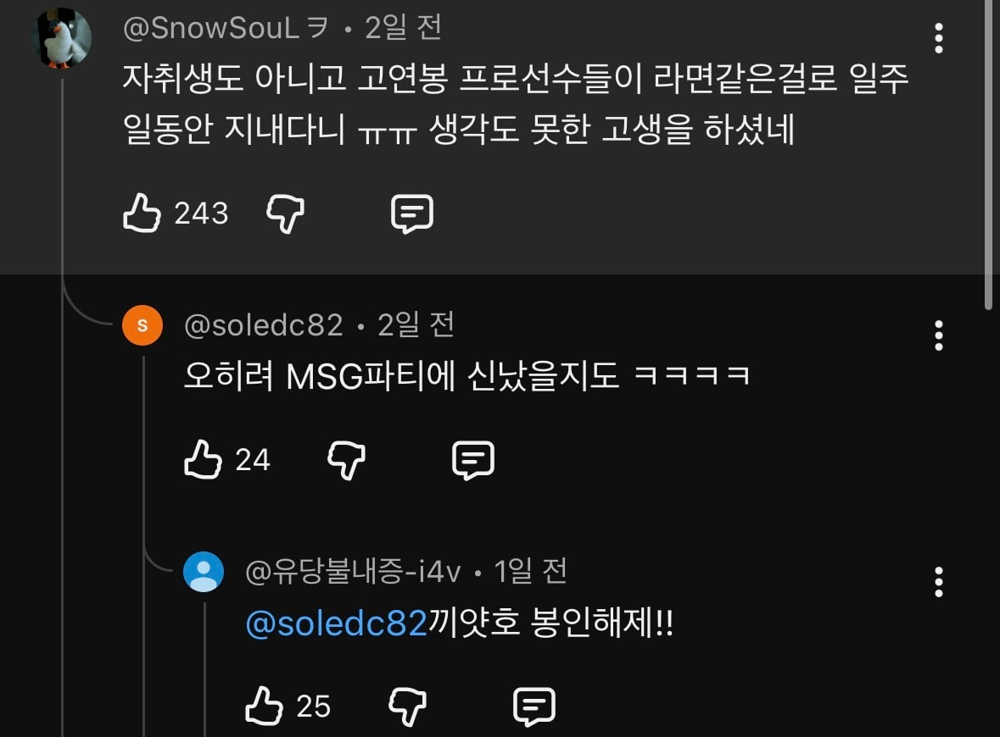

44 · 6 · 1 시간 전 · 원문

"게이밍 푸드"

끼얏호우!!!!
수집 당시 댓글 6개
Loots · 45 분 전
버티긴 뭘 버텨 뭐 못먹을거 먹었나
샛별 · 40 분 전
근본없는 제로콜라가 아니라 코카콜라(예스슈거)라서 인정
나는야한남자가좋아요 · 39 분 전
잘 챙겨먹어야지 저런거 먹으면서 어떻게 컨디션을 최상으로 유지하ㅓ냐
IlIIllllIIIl · 18 분 전
일주일정도면 ㄱㅊ은듯 이번이 처음아닌가 다음부터 좀더운영잘하겟지 머
퍼리천국 · 17 분 전
"실전을 위한 훈련"
년째대학원생 · 11 분 전
경기력을 끌어올리기위한 마인드셋 장착과정임ㅇㅇ;;;
버티긴 뭘 버텨 뭐 못먹을거 먹었나